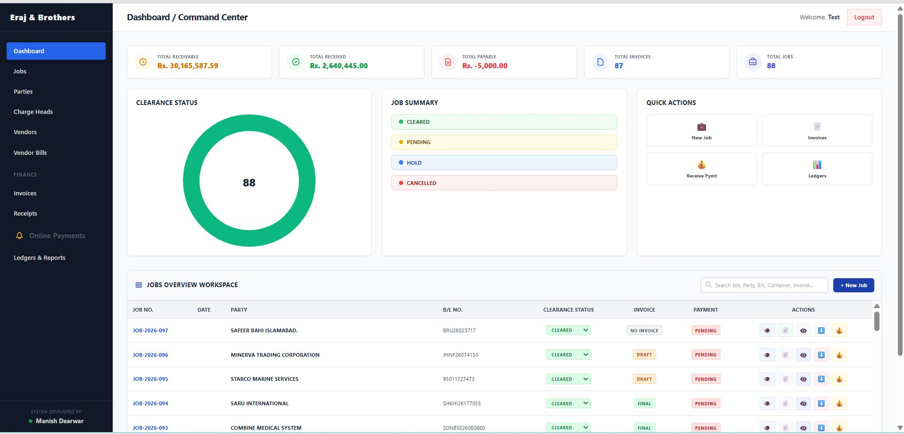

Customs Clearing & Freight ERP
A bespoke ERP for a customs clearing agency: every shipment becomes a job card, every job flows into an invoice, and every invoice flows into a ledger that always balances.

Why this needed to exist
Eraj And Brothers ran operations on manual ledgers and disconnected spreadsheets. Customer advances, partial payments and running balances were easy to get wrong across many shipments. Bulk payments to vendors were hard to allocate to the right bills, and every invoice meant retyping the same shipment details and recalculating charges, taxes, discounts and advances by hand. Editing or deleting one invoice could throw the whole ledger out of sync.
What I built
I built one system around the Job. A job card captures the shipment (B/L, IGM, containers, vessel/voyage, ports, GD number). Invoices are prepared as drafts from the job and its charge heads, and only when they are finalised does the system post to the customer's ledger. If a finalised invoice is edited or deleted, the system reverses the old ledger entry and recalculates the running balance, so later entries are never disturbed.
What it can do
Job management
Central job register with search by job, party, B/L or container, clearance status and quick actions.
Draft vs final invoices
Drafts stay out of the books; finalising posts to the customer ledger so accounting stays clean.
Dynamic charge heads
Searchable charge-head master (duties, excise, port, D/O, etc.) that can be picked straight into an invoice.
Customer & vendor ledgers
Running-balance ledger statements with date filters, search, Excel export and print.
Vendor bills
Record vendor purchases; deleting or editing a bill automatically adjusts the vendor balance and voucher.
Print-ready invoices
Branded A4 invoice with print CSS, number-to-words for PKR and a QR code for online payment.
Online payment verification
Payments submitted by parties land in a pending list to Approve or Reject before posting.
Dashboard command centre
Receivable, received, payable, invoice and job totals with clearance status and a jobs workspace.
What is built — and what is not
I like being clear about where a project actually stands, so you know exactly what you are looking at.
✅ Built & working
- Job cards with full shipment details
- Charge head master and invoice builder
- Draft → final invoice state flow
- Automatic ledger reversal on invoice edit / delete
- Customer ledger with running balance, Excel export and print
- Vendor master, vendor bills and balance adjustment
- Receipts and payment verification (Approve / Reject)
- Print-optimised branded A4 invoice, QR code, number-to-words (PKR)
- Deployed online and used by the client
🚧 Not built yet
- Integration with customs / PSW systems
- Native mobile app
- Multi-company / multi-branch support
Real interfaces, not mockups
Use the numbers / arrows to move through the screenshots. Click the big image to open it full screen.
See it in action
Tech stack
What I learned
- A draft/final state machine is what keeps an accounting system trustworthy.
- Reversal logic (edit or delete → reverse the old entry, post the new one) matters more than the happy path.
- Print CSS needs exact colour rendering and page-break rules to match a physical letterhead.
Need something like Customs Clearing & Freight ERP?
Tell me about your process. I'll reply on WhatsApp with what I would automate and what the first version should include.